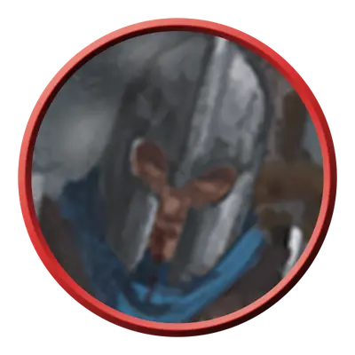

Жентиларский солдат
Zhentilar Soldier
Средний или Маленький Гуманоид, Принципиальный Злой

Класс Защиты 13 Инициатива +2 (12)
Хиты 22 (4к8 + 4)
Скорость 30 футов
| мод | спас | ||
|---|---|---|---|
| СИЛ | 14 | +2 | +2 |
| ЛОВ | 14 | +2 | +4 |
| ТЕЛ | 13 | +1 | +3 |
| мод | спас | ||
|---|---|---|---|
| ИНТ | 10 | +0 | +0 |
| МДР | 11 | +0 | +0 |
| ХАР | 11 | +0 | +0 |
Чувства пассивное Восприятие 10
Языки Общий
Опасность 1 (200 опыта; БВ +2)
Действия
Мультиатака. Жентилар совершает две атаки Коротким мечом или Пистолем в любой комбинации. Он может заменить одну атаку использованием Опрокидывания.
Короткий меч. Бросок рукопашной атаки: +4, досягаемость 5 фт. Попадание: 5 (1к6 + 2) Колющего урона плюс 2 (1к4) урона Ядом.
Пистоль. Бросок дальнобойной атаки: +4, дистанция 80/320 фт. Попадание: 7 (1к10 + 2) Колющего урона.
Опрокидывание. Спасбросок Силы: Сл 12, одно видимое жентиларом существо в 5 футах. Провал: 4 (1к4 + 2) Дробящего урона. Если цель — существо Среднего размера или меньше, она Опрокидывается.
Бонус мастерства +2
Среда обитания Любая
Сокровища Оружейные
Жентилары
Стражи Жентарим
Жентилары — это боевое крыло Жентарим. Отряды жентиларов удерживают крепости Жентарим, такие как Жентильская твердыня и Даркхолд, и обороняют их от многочисленных врагов организации. Если Жентарим — одна большая семья, то жентилары в ней — заботливые старшие братья и сёстры, которые присматривают за остальными своими родичами.
Кроме того, жентилары выполняют и другую важную для организации работу: стерегут мощные магические предметы и сопровождают лидеров Жентарим.
Жентиларские солдаты несут дозор в крепостях и на заставах Жентарим. Цена предательства — если кто-то решится на подобное — настолько высока, что многие из них скорее умрут за Жентарим, чем покинут свой пост.